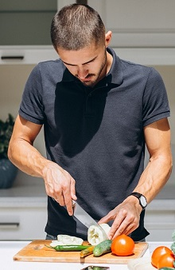
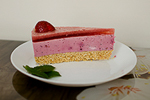
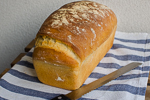
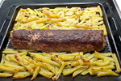
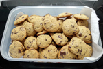

I like to prepare different types of dishes and to put my views and ideas in them. Cooking gives you the freedom to experiment. The good thing is that everyone is happy with your hobby ... especially when I make a delicious dessert. For Saturday in my family we have a tradition to start the day with pancakes. I like them with cheese, and my daughter and wife love them with chocolate. I like to prepare different types of desserts and cakes. I have more success in sweet desserts than in savoury ones. My favourite dessert is an easy type of cheesecake that is made without baking. Canned fruits are used if there are no fresh ones. Cooking such desserts gives me pleasure because the result is always "sweet" and approved by the family.



